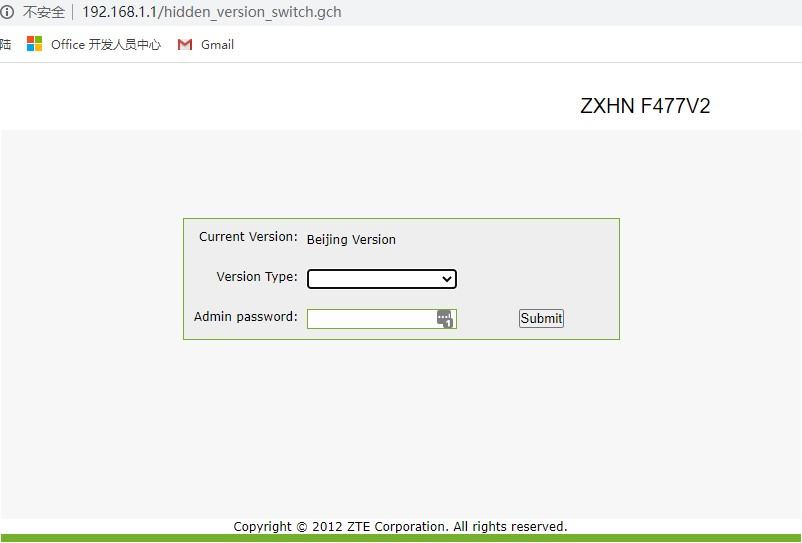
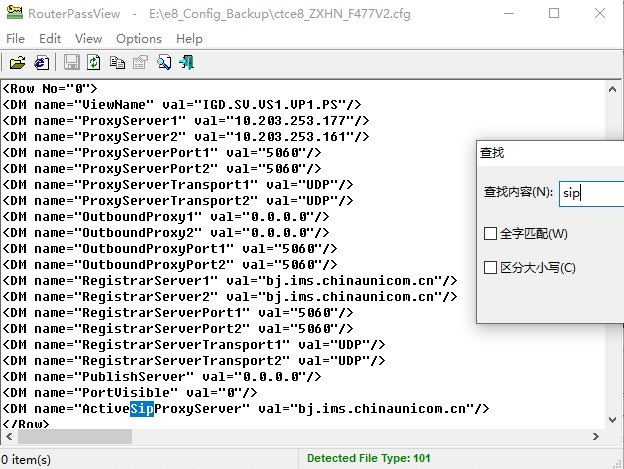

2019新款光猫 F477V2
切换地区、取得超管权限、获得SIP连接信息
前情概要+吐槽
- 因为电信出国线路过于辣鸡，投诉多次无果，申请免违约金退费成功
- 一个多月前家里换了联通300M，￥1300+一年，附赠每月20G的流量和1000分钟的语音，大概是比电信划算
- 就你北京联通事多，全国哪个城市联通都不封的这么死
在动手之前要说的
- 本人对以下内容的可靠性不做保证，由本教程带来的一切损失由您个人承担，软件版本的变化可能会导致本教程失效
- 本教程的方法理论支持中兴系列大部分读不出来密码的猫
- 未破解的页面可能看起来和您的光猫有一些不一样，那是因为我懒得再把光猫还原回去了 :)
- 建议在做任何操作前做好备份(北京区没法备份，我就把 状态->网络侧信息 里面的内容都粘出来了，在破解过程中会用到)
- 请看完整篇文章再动手操作
- 遇到不会的内容可以尝试联系博主Telegram@zzhezz_bot，大概可以无偿帮助(看心情、难易程度以及有没有好好阅读本文)
第一次尝试破解
本次破解只是简单的破解，没啥意义。。。除了给联通装维人员造成麻烦？
装好网之后，尝试登陆后台
用户密码登陆进去似乎并没有什么用（
不过师傅已经给改成桥接了，还能凑合用
尝试进入管理员后台
尝试了几个地址，并没有联通管理登录后台
放弃？不可能！

这应该是中兴的隐藏后门，用来切换版本
想起了之前搞电信光猫的经验，Default Version应该有搞头
切换版本会恢复出厂设置！！！
密码是 CUAdmin，注意大小写
一阵劈里啪啦的响声后，我们获得了光猫超管页面*1
密码还是 CUAdmin，进入
然后到基本配置->上行链路配置->WAN连接中进行设置
默认应该只有1和2
1那个TR069基本不用，2直接桥接上网的话需要改 VLANID:3961，路由模式同理，自己体会体会就行
到这里我就完成了第一步的破解
第二次尝试破解
别看了，这思路不通
去联通营业厅办了固话，所以。。配置需要下发
地区都改了怎么下发嘛😂
然后就尝试改IMS、TR069之类的地址
师傅说后台找不到这个猫了
感谢 @老周部落 提供的各种连接信息
懒得解释都是啥了，反正。。失败了🤔
第三次尝试破解
给师傅打电话要求重新下发所有配置
然后赶紧把猫的地区设置改回了北京，然后发现：没配置！！！等着吧=.=
师傅回电：光猫不在线，没法下发配置，让我重启
按要求重启了两次，那边还是看不到猫
师傅说要上门给我换个猫，那我怎么好意思呢（
自己弄挂的就别让人家上门了。。。
后来试了试用光猫拨号模式连接PPPoE，那边就看到了！！！
不知道他们系统怎么调的，反正配置下发成功（
这个猫很不意外的默认没开Telnet，所以。。。TTL（从@立音喵那里白嫖的）！上！
线序我已贴好，排针不自带需要自己焊，正常上电状态不要接VCC
波特率115200，用Putty或者Xshell之类的软件搞一下就好了
提醒：因为我懒得重新破解了，以下截图都来自与Telnet咕咕咕，过程应该一样，除了TTL会刷出很多系统日志
使用 sendcmd 1 DB saveasy 生成备份文件 /userconfig/cfg/db_backup_cfg.xml
下载 TFTPD32 或者其他TFTP服务器软件，启动
然后在Telnet中 tftp -p -l /userconfig/cfg/db_backup_cfg.xml 你.的.I.P
这样我们就拿到了备份文件(北京联通的猫连备份页面都封死了)
然后打开 RouterPassView，直接读取这个文件。。。好了大家能看得懂了吧

sip的用户名密码可以直接 Ctrl+F 搜索 “8610” 找到对应位置
对于3CX电话系统，应该这么填写中继认证信息
然后直接重置地区，手动把配置写回去就好了（不是还原备份）
小建议：可以配置VLAN透传来实现一根网线承载所有业务，配置如下
Hyper-V中这么设置（用3CX举例）
到此，破解过程全部完成。
附录：北京联通VLAN搜集
| 项目 | VLANID | 备注 |
|---|---|---|
| TR069 | 3969 | PPPoE用户名: bjcu-hgu@rms 密码: s1b5x7z9 |
| 上网 | 3961 | |
| 语音 | 3010 | 静态地址 |
| IPTV | 3964 | 静态地址 |
| 可视电话（无用） | 3962 |